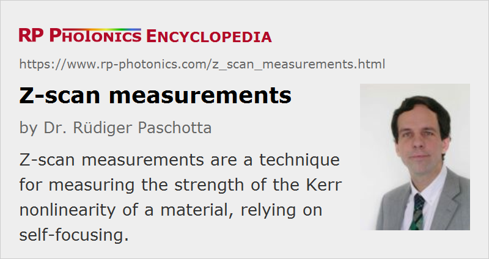

Z-scan Measurements
Definition: a technique for measuring the strength of the Kerr nonlinearity of a material, relying on self-focusing
Categories: nonlinear optics, optical metrology, methods
How to cite the article; suggest additional literature
Author: Dr. Rüdiger Paschotta
The z-scan measurement technique [1, 2] is often used for measuring the strength of the Kerr nonlinearity (i.e. the magnitude of the nonlinear index n2) of an optical material. Essentially, a sample of the material under investigation is moved through the focus of a laser beam, and the beam radius (or the on-axis intensity) is measured at some point behind the focus as a function of the sample position. These quantities are affected by the self-focusing effect. If the nonlinear index is positive, and the sample is placed behind the focus (as in Figure 1), self-focusing reduces the beam divergence and thus increases the detector signal. If the sample is moved to the left-hand side of the focus, the focus is moved to the left, and the stronger divergence after the focus decreases the detector signal. From the measured dependence of the detector signal on the sample position, it is possible to calculate the magnitude of the nonlinear index.
Note that nonlinear absorption, e.g. two-photon absorption, can also affect the measured signal. This, however, can be measured separately by recording the power of the whole transmitted beam. With these data, the measurement of nonlinearity can be corrected.
Questions and Comments from Users
Here you can submit questions and comments. As far as they get accepted by the author, they will appear above this paragraph together with the author’s answer. The author will decide on acceptance based on certain criteria. Essentially, the issue must be of sufficiently broad interest.
Please do not enter personal data here; we would otherwise delete it soon. (See also our privacy declaration.) If you wish to receive personal feedback or consultancy from the author, please contact him e.g. via e-mail.
By submitting the information, you give your consent to the potential publication of your inputs on our website according to our rules. (If you later retract your consent, we will delete those inputs.) As your inputs are first reviewed by the author, they may be published with some delay.
Bibliography
| [1] | M. Sheik-Bahae et al., “High-sensitivity, single-beam n2 measurements”, Opt. Lett. 14 (17), 955 (1989), doi:10.1364/OL.14.000955 |
| [2] | M. Sheik-Bahae et al., “Sensitive measurement of optical nonlinearities using a single beam”, IEEE J. Quantum Electron. 26 (4), 760 (1990), doi:10.1109/3.53394 |
| [3] | J. Wang et al., “Time-resolved Z-scan measurements of optical nonlinearities”, J. Opt. Soc. Am. B 11 (6), 1009 (1994), doi:10.1364/JOSAB.11.001009 |
| [4] | S. Hughes et al., “Fast Fourier transform techniques for efficient simulation of Z-scan measurements”, J. Opt. Soc. Am. B 12 (10), 1888 (1995), doi:10.1364/JOSAB.12.001888 |
| [5] | S. M. Mian et al., “Effects of beam ellipticity on Z-scan measurements”, J. Opt. Soc. Am. B 13 (5), 856 (1996), doi:10.1364/JOSAB.13.000856 |
| [6] | R. de Nalda et al., “Limits to the determination of the nonlinear refractive index by the Z-scan method”, J. Opt. Soc. Am. B 19 (2), 289 (2002), doi:10.1364/JOSAB.19.000289 |
| [7] | B. Gu et al., “Theory of Gaussian beam Z scan with simultaneous third- and fifth-order nonlinear refraction based on a Gaussian decomposition method”, J. Opt. Soc. Am. B 22 (12), 2651 (2005), doi:10.1364/JOSAB.22.002651 |
| [8] | M. C. Fischer et al., “Simultaneous self-phase modulation and two-photon absorption measurement by a spectral homodyne Z-scan method”, Opt. Express 16 (6), 4192 (2008), doi:10.1364/OE.16.004192 |
| [9] | L. C. Oliveira and S. C. Zilio, “Single-beam time-resolved z-scan measurements of slow absorbers”, Appl. Phys. Lett. 65, 2121 (1994) |
| [10] | T. Olivier et al., “Nanosecond Z-scan measurements of the nonlinear refractive index of fused silica”, Opt. Express 12 (7), 1377 (2004), doi:10.1364/OPEX.12.001377 |
| [11] | L. Pálfalvi et al., “A general Z-scan theory”, Appl. Phys. B 97 (3), 679 (2009) |
See also: self-focusing, Kerr effect, nonlinear index
and other articles in the categories nonlinear optics, optical metrology, methods
|  |
If you like this page, please share the link with your friends and colleagues, e.g. via social media:
These sharing buttons are implemented in a privacy-friendly way!